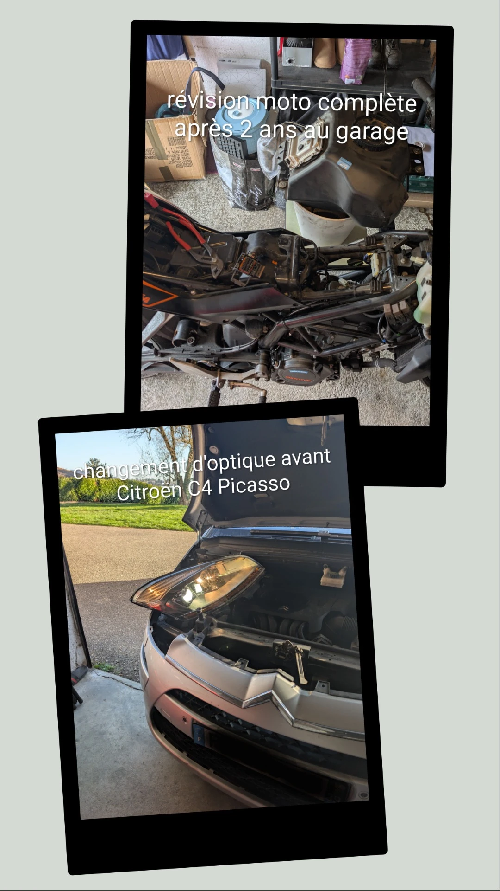

Experts en réparation et bricolage
Nous sommes une entreprise de services de réparation et de bricolage, spécialisée dans les petits travaux intérieurs et extérieurs de la maison, mais pas que…
– jardin, entretien de voiture, moto et scooter, montage de meubles en kit, création de meubles sur mesure, etc.
Nous mettons notre expertise à votre disposition pour vous offrir un service de qualité et répondre à tous vos besoins en matière de réparation et de bricolage.
Les petites réparations et entretiens « Voiture – Moto »
Petits entretiens voiture, moto, scooter
Répare moi si tu peux propose un service complet de petits entretiens pour voitures et motos, idéal pour prolonger la durée de vie de chaque véhicule au quotidien. Chaque intervention est réalisée avec soin afin de garantir sécurité, fiabilité et confort de conduite.
Les prestations couvrent notamment le changement d'huile, la réparation de petites fuites, le remplacement de filtres à huile et à air, les bougies, les ampoules, les balais d’essuie-glace, ainsi que la vérification des niveaux et des éléments de sécurité essentiels.
Un nettoyage complet est également proposé.
Un service d’entretien régulier est également proposé : vidange moteur, contrôle des pneus, contrôle des plaquettes et des disques de frein, contrôle des suspensions et de la batterie. Ces entretiens préventifs permettent d’éviter les pannes coûteuses et de conserver de bonnes performances, que ce soit pour une voiture du quotidien ou une moto de loisir.
Chaque intervention est expliquée de manière transparente, avec des conseils personnalisés pour entretenir le véhicule entre deux visites. Pour plus d’informations sur les autres services, consultez la page contact pour prendre rendez-vous.

Les petites réparations intérieures ou extérieures de la maison
Petites réparations intérieures et extérieures de la maison
Les petites réparations de la maison regroupent tous les travaux simples qui améliorent le confort et l’esthétique, sans modifier la structure du bâtiment ni toucher aux murs porteurs ou au gros œuvre électrique. Ces interventions sont idéales pour entretenir un logement, le moderniser et prévenir les dégradations plus importantes.
Exemples de petites réparations intérieures
- Remplacer une poignée de porte, une serrure simple ou des charnières usées.
- Poser ou changer des plinthes, baguettes de finition ou seuils de porte.
- Poser du parquet ou du lino.
- Peindre des murs ou des pièces complètes.
- Réparer un robinet qui fuit, changer un flexible de douche ou un siphon accessible.
- Remplacer un interrupteur ou une prise déjà existante, sans modifier le circuit électrique.
- Reboucher des petits trous, fissures de surface et refaire un joint de silicone autour d’un lavabo ou d’une baignoire.
- Poser un luminaire, une tringle à rideaux, des étagères ou des patères sur des cloisons adaptées.
Exemples de petites réparations extérieures
- Remplacer une latte de clôture, une planche de terrasse ou une marche abîmée.
- Réparer ou changer une poignée de portail, une serrure simple ou un gond.
- Entretenir les joints de surface autour des fenêtres et portes extérieures.
- Rafraîchir une peinture écaillée sur volets, garde-corps ou menuiseries.
- Nettoyer et remettre en état des gouttières accessibles (sans modification de la charpente).
« Travaux exclus » : murs porteurs et gros œuvre électrique
Les murs porteurs assurent la stabilité de la maison. Toute ouverture, démolition ou modification de ces éléments relève de travaux de structure et nécessite une étude technique et des autorisations spécifiques. De même, le gros œuvre électrique comprend la création ou la modification des circuits, du tableau électrique ou des protections générales. Ces interventions doivent être réalisées par un professionnel qualifié.
Les petites réparations se limitent donc aux éléments de finition et d’équipement facilement accessibles, sans toucher à la structure ni à l’installation électrique de base, afin de garantir la sécurité et la conformité du logement.